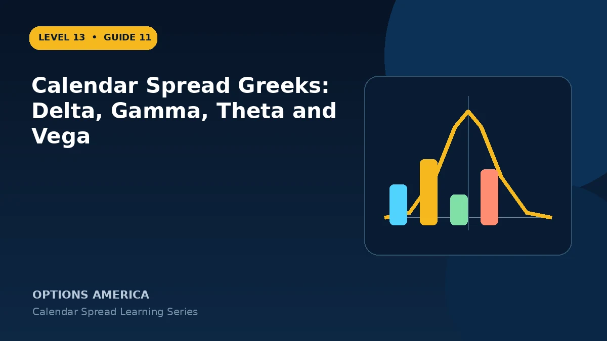

Understand how near- and back-month options combine into calendar delta, gamma, theta and vega.
Delta
An ATM calendar may begin near delta-neutral because the two options partly offset. OTM calendars carry directional delta toward the target, and delta can reverse after price passes the strike.
Gamma
The short front option often has more gamma than the longer option, creating negative net gamma near the strike as front expiration approaches. Small moves can therefore change delta unfavorably.
Theta
The front option usually decays faster, supporting positive net theta near the target. Far from the strike or after a large price move, the balance can change.
Vega
The longer-dated option typically has more vega, creating positive net exposure. A back-month volatility contraction can hurt even while front-month time decay works as expected.
A practical example
A calendar shows delta +0.04, gamma −0.03, theta +0.07 and vega +0.16 per share. Position size and contract multiplier turn these into material dollar exposures.
This simplified example uses selected price, time and volatility assumptions; live results will differ. Live option prices also reflect the underlying price, time decay, rates, dividends, liquidity and transaction costs. Greeks are theoretical estimates, not guarantees.
Frequently asked questions
Is calendar theta always positive?
No. Price and time can change it.
Why is vega often positive?
The longer option generally has greater volatility sensitivity.
Can delta reverse?
Yes, as price crosses the target strike.
Continue the Calendar Spreads cluster
Explore related guides: Theta and Time Decay in a Calendar Spread · Calendar Spread: 12 Mistakes to Avoid · How to Choose a Calendar Spread Strike. For a structured sequence, use the free Level 13 – Calendar Spreads course.
Options involve risk and are not suitable for every investor. This material is educational and is not investment, tax or legal advice. Greeks are theoretical estimates, and contract terms and broker requirements can vary.